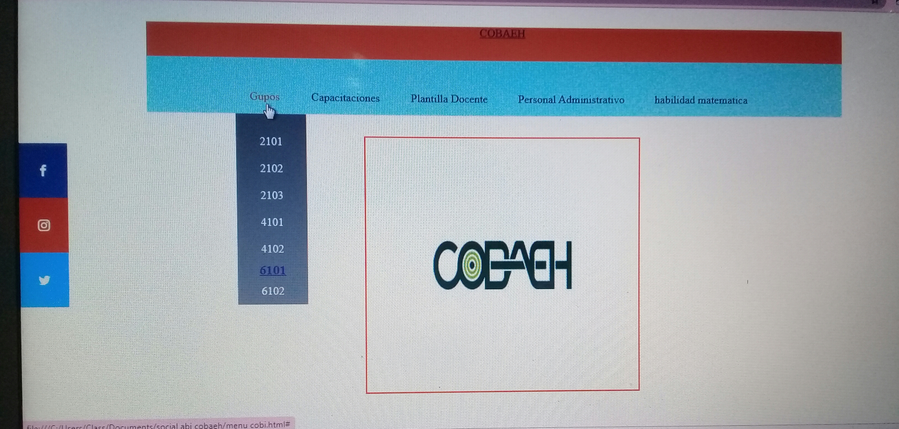
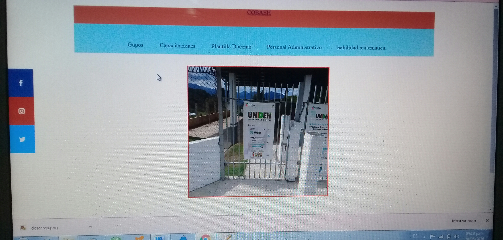

pagina web menus, banner,social bar, y grid
La practica de una pagina web de menus, la realizamos en html5 y le dimos edicion en css en ella colocamos un (nav
class) llamado COBAEH y diferentes menus estos los colocamos con un (ul class) entro de ellos colocamos submenus estos se
ponen con la misma directiva (ul class)en css pusimos un codigo con el nombre de la clase y un ul li para poder
quitar los puntos y asi estos se hicieran de manera de cuadros y lista hacia abajo, debajo de estos menus pusimos,
un banner esta es una clase (div class)llamada banner en donde colocamos imagenes
de el aula,logo y plantel esta cambiaba cada 5 segundos esta tambien se dio estilo en css,el siguiente fue una barra social la cual
se coloco en la parte izquierda de la pagina en esta se colocaron los iconos de redes sociales, estos fueron descargados de
una pagina, el ultimos fue un grid nos ayudo a realizar una pagina aparecido a los articles pero ahora con aside y a crear clases
en esta pusimos imagenes y un mensaje de despedida para nuestros companeros.
 
Lesly Abigail Torres Ramirez 6101